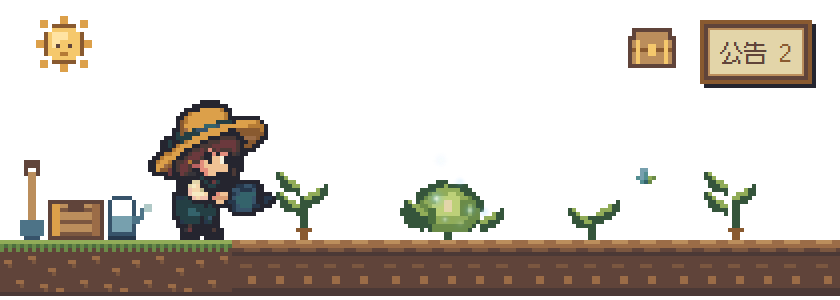

Windows · 二维像素桌面伙伴
让对话长成
桌面上的一片菜园。
一颗种子，一轮工作。让生长、成熟和微光，陪你看见对话的变化。

示例画面，不含真实对话。轻轻照料，继续专注
点击走近，双击收获并回到对话。给植物浇水、施肥，收藏特殊品种；这些互动不会改变真实工作进度。
留在本机，融入桌面
透明区域支持鼠标穿透，不抢键盘输入。拖动太阳就能移动菜园。首次确认后才读取本机 Codex 数据，无广告与遥测。
成熟代表观察到一轮完成，不等于任务验收通过。需要 Windows x64 与 Codex 桌面版。